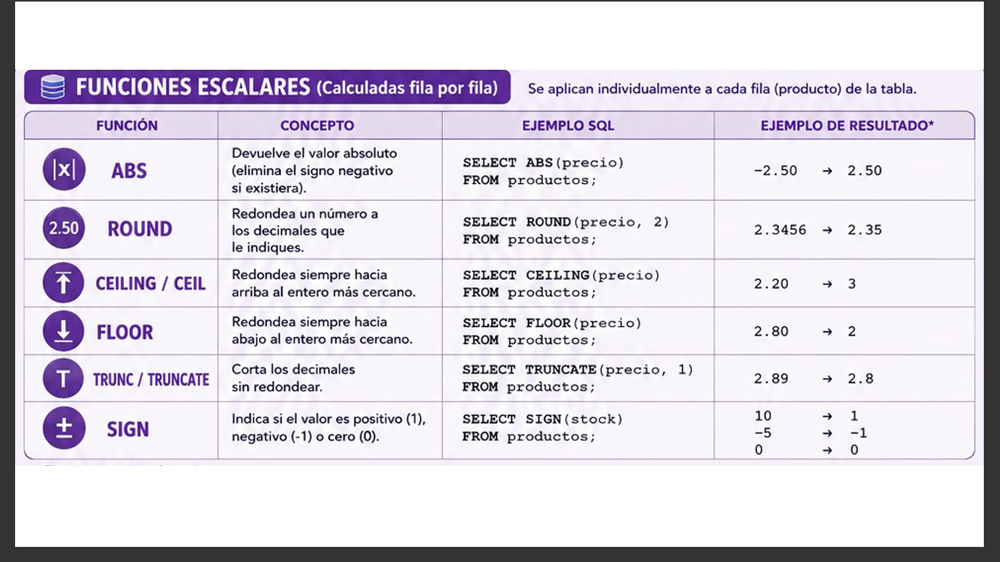
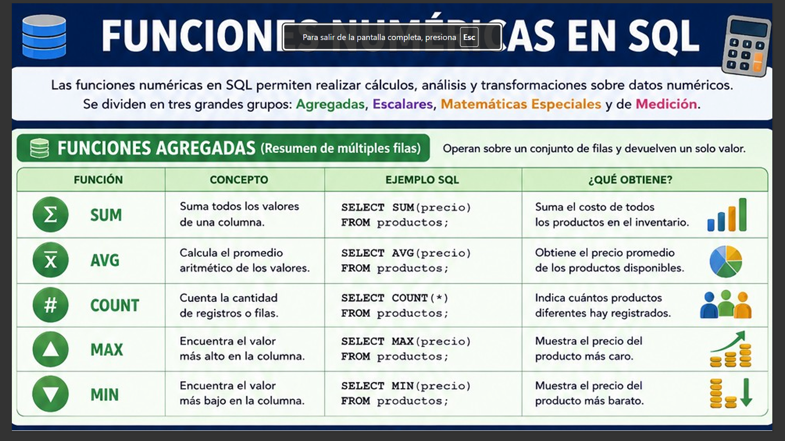
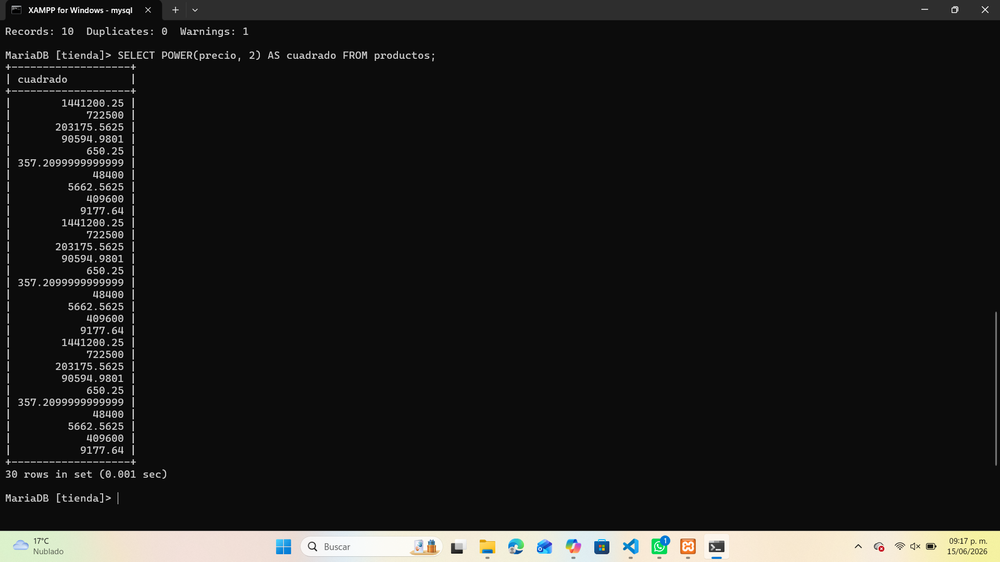

Funciones Numéricas en SQL
Las funciones numéricas permiten realizar cálculos, análisis y transformaciones sobre datos numéricos. Se dividen en tres grandes grupos: Agregadas, Escalares y Matemáticas Especiales.
Funciones Agregadas
Operan sobre un conjunto de filas y devuelven un solo valor. Son ideales para obtener resúmenes o estadísticas.
| Función | Concepto | Ejemplo SQL | Resultado |
|---|---|---|---|
| SUM() | Suma todos los valores de una columna. | SELECT SUM(precio) FROM productos; |
Suma total del costo de los productos. |
| AVG() | Calcula el promedio aritmético. | SELECT AVG(precio) FROM productos; |
Precio promedio de los productos. |
| COUNT() | Cuenta la cantidad de registros. | SELECT COUNT(*) FROM productos; |
Total de productos registrados. |
| MAX() | Encuentra el valor más alto. | SELECT MAX(precio) FROM productos; |
Precio del producto más caro. |
| MIN() | Encuentra el valor más bajo. | SELECT MIN(precio) FROM productos; |
Precio del producto más barato. |

Funciones Escalares
Se aplican individualmente a cada fila y devuelven un valor por registro.
| Función | Concepto | Ejemplo SQL | Resultado |
|---|---|---|---|
| ABS() | Devuelve el valor absoluto. | SELECT ABS(precio) FROM productos; |
Convierte -2.50 en 2.50. |
| ROUND() | Redondea un número a los decimales indicados. | SELECT ROUND(precio, 2) FROM productos; |
Convierte 2.3456 en 2.35. |
| CEILING() | Redondea hacia arriba al entero más cercano. | SELECT CEILING(precio) FROM productos; |
Convierte 2.20 en 3. |
| FLOOR() | Redondea hacia abajo al entero más cercano. | SELECT FLOOR(precio) FROM productos; |
Convierte 2.80 en 2. |
| TRUNCATE() | Corta los decimales sin redondear. | SELECT TRUNCATE(precio, 1) FROM productos; |
Convierte 2.89 en 2.8. |
| SIGN() | Indica si el valor es positivo (1), negativo (-1) o cero (0). | SELECT SIGN(stock) FROM productos; |
10 → 1, -5 → -1, 0 → 0. |

🧠 Funciones Matemáticas Especiales
Permiten realizar cálculos más avanzados, como potencias, raíces o logaritmos.
SELECT POWER(precio, 2) AS cuadrado FROM productos;Este ejemplo eleva al cuadrado el valor del precio de cada producto.

Recomendaciones
- Usa funciones agregadas para obtener resúmenes globales.
- Aplica funciones escalares para transformar valores individuales.
- Combina funciones matemáticas para análisis más complejos.
- Verifica los tipos de datos antes de aplicar funciones numéricas.
- Utiliza alias (AS) para nombrar columnas calculadas.